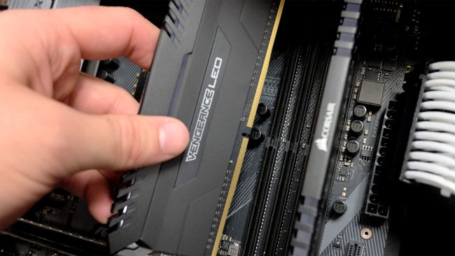
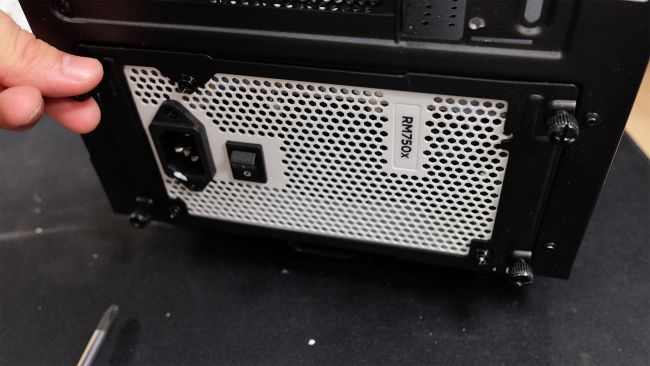
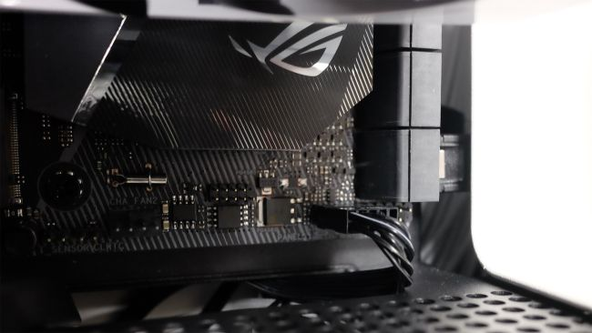
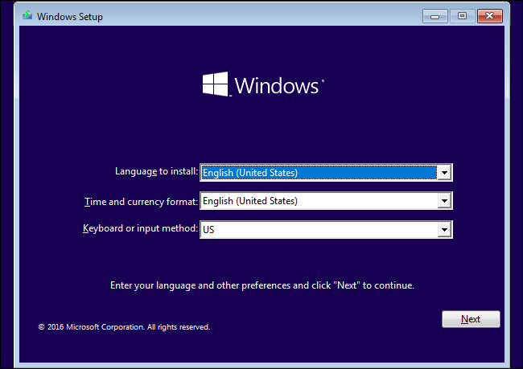

Stepwise Build Guide
A complete step by step approach to help you assemble your PC
Get the case ready
First thing you’ll want to do is strip the case down as far as you can go. Remove every panel that you can, and store them in a safe place (inside the case box is the best bet). We recommend using a bowl (or a magnetic parts tray if you want to be fancy) to hold your screws throughout your PC building process.
Install the fans
If you’ve purchased some replacement or extra cooling fans, now is the time to install them where you need them. Try to keep your cooling setup balanced, so there’s as much air being drawn in, as is being blown out. In case you’re not sure which way the wind will go, the plastic fan guards usually denotes where the air will come through.
Typically you want two fans in the front drawing air in and at least one in the rear blowing air out. You could also screw one or two more optional fans into the roof of the PC case for additional exhaust, if your PC case has mounting points for them.
Motherboard installation
Before we get to install the motherboard, you’ll want to check on a few things about your PC case. Check for pre-installed motherboard standoffs, ensure the number and arrangement of them conforms to the holes found on your motherboard.
Secondly, see if your PC case has a large CPU cutout or window cut into the back of the motherboard frame. If it doesn’t you may want to install any CPU cooler backplates and M.2 solid-state drives at this juncture.
Now that’s done, first find your motherboard’s rear I/O shield, and push it into the rectangular slot in the back of your PC case. Make sure it’s right side up by matching the pattern of cutouts to the arrangement of ports on the back of your motherboard.
Next, lay your motherboard down inside the chassis – carefully lining up its rear ports with the corresponding holes in the I/O shield you just installed – on top of the standoffs installed in your chassis.
Then it’s a simply case of securing the motherboard down with the screws that came with your chassis. Make sure you use the right ones here, as you don’t want to thread the standoffs, in case you need to remove it at a later date.
CPU Installation

Next up, socket your CPU into the motherboard. Here’s where things are a little different depending on which processor family and/or brand you decided to go with.
For Intel mainstream CPUs, slide the spring loaded retention arm out and up, then lift the bracket up leaving the plastic cover in place. Then, gently place your CPU inside the socket, matching the golden triangle located on the bottom left corner of the processor, with the triangle on the socket bracket.
For the next step, you should slide the securing bracket back into its original position so it locks in place underneath the screw, and secure the retention arm back down. During this process the protective plastic cover should pop off, so don't freak out if it comes flying at you. Be sure to stow the cover away in a safe place as it'll protect the motherboard's sensitive pins if you decide to remove the processor from the motherboard.
If you’re installing an AMD CPU, fortunately installation is much less daunting. There’s no bracket here, simply lift the retention arm in its raised position.
You should then take your processor and match the golden triangle on the corner of the Ryzen processor with the triangle on the socket. Once the pins on the bottom of the processor lineup with the holes on the socket, drop it into place. Give it a little nudge to make sure it’s secure, then lower the retention arm back down and lock it into place.
Processor installation done, whew.
RAM Installation

Next on the agenda is installing computer memory. Push down the latches at either ends of the DDR4 slots on your motherboard. Then line up the notch on the bottom of the memory with the notch in the slot. After that, you can install the memory by carefully pushing down both sides of the memory into the slot. You should hear a clicking sound as the memory secures into place and the latches click back up.
Make sure you use the farthest and second closest slot from the CPU if you’re only using two memory sticks. Complete that and you’ll be good to go.
Cooler mounting
Here's the last complicate piece in the PC building process, CPU coolers.
Most third-party coolers require installing a backplate, which you may or may not have already done from step three of our PC building guide. Each individual cooler will have its own set of instructions your should follow, but the gist of most installations requires affixing a backplate and threading four pins though back of your motherboard.
From there you’ll want to thermal paste if your CPU cooler didn’t come with any pre-applied already. Users will want to squeeze out a small blob, around the size of half a pea, onto the middle of the CPU. This will spread out once your cooler is mounted, and provide a sufficient amount of thermal interface material to successfully transfer heat from the processor die to the cooler of your choosing.
For air coolers, you’ll want to install most models with the fans unattached. Carefully orient the heatsink onto the pins or threads of the mounting plate and secure in place with any provided thumb screws or regular screws. After that it’s simply a case of reattaching the fan to the tower, and plugging the 4-pin PWM fan header into the CPU Fan slot on the motherboard.
Liquid-coolers follow basically the same process, but require more upfront work. You'll probably have to attach fans onto the radiator and installing it into your PC case in advance. Depending on which liquid-cooler you’re using, you may also need to plug in a second four-pin cable into a dedicated AIO cooler or optional cooler header on your motherboard.
This is also a good opportunity to plug in the rest of your system fans into any available slots on the board. Or alternatively, if your PC case has an integrated fan controller at the back of the chassis to route all your fans into, then directly onto the motherboard. It’ll also need to connect to the motherboard via USB header.
Storage installation
Once memory is in, it’s time to focus on some non-volatile memory storage, hard drives and solid-state drives. Our NZXT H400i happens to have a small SSD bracket on the front. Installing 2.5-inch drives into these caddies is a cinch, as you can simply slide it into place with the option of fully securing it with four screws.
Most modern PC cases comes with SSD bays of some sort. But if you’re case doesn’t, the 3.5-inch drive caddies typically reserved for hard drives should have compatible mounting points. No matter what type of storage drive you’re installing, ensure the connection ports are facing towards a cable cut-out inside your chassis as it will make routing cables easier.
PSU positioning

Now you’ve got your motherboard, CPU and memory installed you’re going to want to install your power supply next. If you’ve got a modular PSU, figure out what cables you need ahead of time, and plug them into your power supply first.
If your PC case comes with a PSU bracket, remove it ahead of time and attach it to the back of the unit. Next up thread the cables through the PSU slot in the back of the case first, and then slide the PSU into place, securing the bracket back onto the chassis.
Otherwise, on older cases you’ll have to slip in the power supply in through the inside of the chassis and push it firmly against the inside wall as you attach it with four screws.
Depending on the design of your case, you’ll want to orient the fan towards ventilation areas built into it. For most cases we suggest facing the fan downwards or to the side away from the interior of your PC. This way, your PSU can draw in fresh air and exhaust heat through the back.
Buttons
To get your front I/O power buttons working properly, you need to plug in the correct cables. Fortunately, on our NZXT H400i, this is a single block that plugs directly onto the front I/O headers on the motherboard, make sure you orient it the correct way, then push it into place on the pins.
For everyone else, take the individual pins, and, using the motherboard installation handbook, identify which pins and cables need connecting. Try to do this part gently do, so as to not to bend the pins. It’s important to note that any LED lights (HDD and Power), need to be oriented correctly, with the + and - cables installed into the + and - pins on the board.
It’s also a good time to plug in your USB 3.0 header, USB 2.0 header, and audio passthrough. Audio is located on the bottom left of most motherboards. It will be labelled, and the pin outs will be different to the USB 2.0 headers. Install your USB 3.0 cables (denoted with a blue-colored end) into any available slots on the board, making sure to lineup the pins with the holes in the USB 3.0 cables.
Cable Management

Now you can plug in the rest of your power cables.
Identify your 8-pin EPS cable, and slide it up the back of the chassis, through the cable grommet and plug it into the 8 pin power slot at the top of the motherboard. Then, find the bulkier 24-pin cable, slide that through any cable routing recesses on the chassis and plug it into the corresponding 24-pin ATX power port on the motherboard.
Next up, take your SATA power and connect it to any storage drives. If you happen to have a something mounted onto the front of the case, run this SATA power cable through the PSU shroud, appropriate grommets or holes, and into your front mounted 2.5-inch drive. This is a good opportunity to plug in the SATA Data cables between any storage drives and the motherboard as well.
Lastly, you’ll want to thread your PCIe power cable through the cutout in the PSU cover or any side grommets/holes, so that it’s ready for when you install your GPU.
Graphics Card Installation
Finally we have the last piece of the puzzle to slot into place.
First take a look at your motherboard and locate the PCIe slot closest to your processor. From there locate the two PCIe slots next to where you’ll want to install your GPU and remove them. In most PC cases, that’ll involve undoing two screws on the PCIe slot covers and removing them.
Take your graphics card out of the anti-static bag and line it up with the slots we just opened up. The rear I/O on the GPU should be facing out the back of the chassis. Once the gold contacts on your GPU make are touching the PCIe slot, gently push it into place until you hear a click. Then use the same screws we removed from the PCIe slot cover to secure the GPU into place.
Then it’s simply a case of plugging your PCIe power that you routed in with our last step – and we have a fully built PC (mostly).
BIOS check
Now the system’s built, don’t reattach all your panels just yet. First you’ll want to make sure it actually turns on and runs properly.
Take your temporarily built tower over to your pre-setup computer space and plug it into power, a screen, keyboard and mouse too. Power it on, and mash the delete key to get into the BIOS screen. Check your CPU temp, make sure that’s operating somewhere around 30-40 degrees C, and ensure that your boot drive is registering correctly.
If everything is showing up, now is also a good time to enable the XMP for Intel or DOCP for AMD to make sure your memory is operating at the correct frequency. Then hit F10, save and exit. Then power off.
Finishing Up
Now that we’re sure the machine is working, disconnect it again and bring it back to your workspace. It’s worth doing this because you’ll want to reattach all those PC case panels and tidy up any loose cables.
That means using cable ties to bunch together cables as much as you can. Most PC cases come to cable cut-outs to use as tie down points. Where they’re aren’t any, we usually use thicker cables to help push smaller ones flush against the inside of our computer chassis.
Installing Windows

Bring the system back to your computer space, where it’ll sit forever – or at least until your next upgrade – as we’ll want to install the operating system next.
Most modern rigs lack an optical drive to install your OS, so you’ll need to create a USB install on another PC. To do this, download the Windows 10 Media Creation Kit and then install Windows 10 onto an USB stick with at least 8GB of space.
Then, once it’s finished, simply plug it into your new system. Go back into your BIOS to tell your system to boot from the USB stick first. From there you can go through the prompts to install the operating system onto your new rig. Don’t worry about not having a software key during installation, you can activate Windows 10 once you reach desktop.
Desktop Maintainance and Installing Drivers
Once you’re finally logged on, head on over to the manufacturer’s website, find your motherboard, head to service, and download the correct chipset drivers for your system.
Ninite is a nifty tool to get all the programs you want fast without having to worry about installing each one individually is. On the Ninite site, you can select which programs you want, download the installer and let it run its magic. After that, go download and install the correct graphics driver for your card and you’ll be all set to sit back and enjoy.